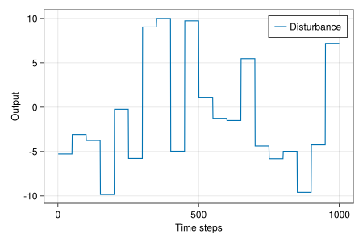

(Convex) Nonlinear Control with REN
This example was first presented in Section IX of Revay, Wang & Manchester (2021). Full example code can be found here.
RENs and LBDNs can be used for a lot more than just learning-based problems. In this example, we'll see how RENs can be used to design nonlinear feedback controllers with stability guarantees for linear dynamical systems with constraints. Introducing constraints (eg: minimum/maximum control inputs) often means that nonlinear controllers perform better than linear policies. A common approach is to use Model Predictive Control (MPC). In our case, we'll use convex optimisation to design a nonlinear controller. The controller will be an echo state network based on a contracting REN. We'll use this alongside the Youla-Kucera parameterisation to guarantee stability of the final controller.
For a detailed explanation of the theory behind this example, please read Section IX of the original paper. For more on using RENs with the Youla parameterisation, see Wang et al. (2022) and Barbara, Wang & Manchester (2023).
1. Background theory
Stabilising a linear system
We'll start with some background on the structure of linear systems and output-feedback controllers. Consider a discrete-time linear system with state vector $x_t$, control signal $u_t$, external inputs $d_t$, measured output $y_t,$ and some performance variable $z_t$ to be kept small.
\[\begin{aligned} x_{t+1} &= \mathbb{A}x_t + \mathbb{B_1} d_t + \mathbb{B_2} u_t \\ z_t &= \mathbb{C_1} x_t + \mathbb{D_{11}} d_t + \mathbb{D_{12}} u_t \\ y_t &= \mathbb{C_2} x_t + \mathbb{D_{21}} d_t \end{aligned}\]
A typical choice of stabilising controller is an output-feedback structure with state estimate $\hat{x}_t$ and observer/controller gain matrices $L$ and $K$, respectively.
\[\begin{aligned} \hat{x}_{t+1} &= \mathbb{A}\hat{x}_t + \mathbb{B_2} u_t + L \tilde{y}_t \\ \tilde{y}_t &= y_t - \mathbb{C_2} \hat{x}_t \\ u_t &= -K\hat{x}_t + \tilde{u}_t \end{aligned}\]
We have also included an additional signal $\tilde{u}_t$ to augment the control inputs $u_t.$ With a little bit of algebra, the closed-loop dynamics of the system can be written in the following form, where $\mathcal{T}_0, \mathcal{T}_1, \mathcal{T}_2$ are linear systems.
\[\begin{bmatrix} z \\ \tilde{y} \end{bmatrix} = \begin{bmatrix} \mathcal{T}_0 & \mathcal{T}_1 \\ \mathcal{T}_2 & 0 \end{bmatrix} \begin{bmatrix} d \\ \tilde{u} \end{bmatrix}\]
Notice that there is no coupling between $\tilde{y}$ and $\tilde{u}$.
Controller augmentation
The linear controller will stabilise our linear dynamical system in the absence of any constraints. But what if we want to shape the closed-loop response to meet some user-defined design criteria without losing stability? For example, what if we want to keep the control signal in some safe range $u_\mathrm{min} < u_t < u_\mathrm{max}$ at all times?
It turns out that if we augment the original controller with $\tilde{u} = \mathcal{Q}(\tilde{y})$ where $\mathcal{Q}$ is a contracting system then the closed-loop system is guaranteed to remain stable. This is incredibly useful for optimal control design. For example, we could use a contracting REN as our parameter $\mathcal{Q}$ and optimise it to meet some performance specifications (like control constrains), knowing that final closed-loop system is guaranteed to be stable. The closed-loop response can be written as follows.
\[z = \mathcal{T}_0 d + \mathcal{T}_1 \mathcal{Q}(\mathcal{T}_2 d)\]
This is an old idea in linear control theory called the Youla-Kucera parameterisation. We extended it to nonlinear models (like RENs) and nonlinear dynamical systems in Wang et al. (2022) and Barbara, Wang & Manchester (2023), respectively.
Echo state networks with REN
Now that we've decided on a structure for our control framework, we need a way to create and optimise a contracting $\mathcal{Q}$ to meet our design criteria. We could directly use a contracting REN for $\mathcal{Q}$ and train it with reinforcement learning, thereby learning over the space of all stabilising controllers for this linear system. While it's very useful to have this option, sometimes we'll want a more efficient solution. Enter convex optimisation with echo state networks.
Let's say $\mathcal{Q}$ has learnable parameters $\theta$. Suppose our problem is to minimise some convex objective function $J(z)$ subject to a set of convex constraints. I.e:
\[\min_\theta J(z) \quad \text{s.t.} \quad c(z) \le 0\]
An echo state network is a dynamic model with randomly sampled but fixed dynamics and a learnable output map. We can create contracting echo state networks $\mathcal{Q}$ with contracting RENs. When a REN model is called, it can be viewed as a system with the following form (see ExplicitRENParams).
\[\begin{equation*} \begin{bmatrix} \bar{x}_{t+1} \\ v_t \\ \bar{y}_t \end{bmatrix} = \begin{bmatrix} A & B_1 & B_2 \\ C_1 & D_{11} & D_{12} \\ C_2 & D_{21} & D_{22} \\ \end{bmatrix} \begin{bmatrix} \bar{x}_t \\ w_t \\ \bar{u}_t \end{bmatrix} + \begin{bmatrix} b_x \\ b_v \\ b_y \end{bmatrix} \end{equation*} \quad \text{where} \quad w_t = \sigma(v_t)\]
Note that $\sigma$ is the nonlinear activation function (eg: a ReLU). The inputs and outputs of the REN are $\bar{u}_t$ and $\bar{y}_t$, respectively. We can therefore create a contracting echo state network by randomly initialising a contracting REN whose outputs are $\bar{x}_t, w_t, \bar{u}_t$ and separately optimising the output layer
\[\bar{y}_t = C_2 \bar{x}_t + D_{21} w_t + D_{22} \bar{u}_t + b_y,\]
where the learnable parameters are $\theta = [C_2 \ D_{21} \ D_{22} \ b_y].$
The advantage of using an echo state network for $\mathcal{Q}$ in the Youla parameterisation is that the problem is entirely convex in $\theta.$ This means we can solve for the best choice of $\theta$ using standard convex optimisation tools. To see why, think of the echo state network as $\mathcal{Q}(\tilde{y}) = \sum_i \theta_i \mathcal{Q}_i(\tilde{y})$ where the $\mathcal{Q}_i$ are defined by the contracting REN. The closed-loop dynamics are therefore affine in $\theta$ since $\mathcal{T}_1$ is linear.
\[z = \mathcal{T}_0 d + \sum_i \theta_i \mathcal{T}_1 \mathcal{Q}_i(\mathcal{T}_2 d)\]
2. Problem setup
Let's consider a simple discrete-time linear system whose closed-loop transfer functions are
\[\mathcal{T}_0 = \mathcal{T}_1 = -\mathcal{T}_2 = \frac{0.3}{q^2 - 2\rho \cos(\phi)q + \rho^2}\]
where $q$ is the shift operator and $\rho = 0.8,$ $\phi = 0.2\pi.$ ControlSystems.jl offers a nice interface for working with discrete-time transfer functions.
using ControlSystems
# System parameters and poles: λ = ρ*exp(± im ϕ)
ρ = 0.8
ϕ = 0.2π
λ = ρ .* [cos(ϕ) + sin(ϕ)*im, cos(ϕ) - sin(ϕ)*im]
# Construct discrete-time system with gain 0.3, sampling time 1.0s
k = 0.3
Ts = 1.0
sys = zpk([], λ, k, Ts)
# Closed-loop system components
sim_sys(u::AbstractMatrix) = lsim(sys, u, 1:size(u,2))[1]
T0(u) = sim_sys(u)
T1(u) = sim_sys(u)
T2(u) = -sim_sys(u)Our aim is to minimise the $\ell^1$ norm of the performance objective $z$ while constraining the control input to $-5 \le u_t \le 5$ at all times in response to step inputs with an amplitude of 10.0.
3. Generate training data
We'll generate a long trajectory of sample inputs ("disturbances") $d$ consisting of a random step every 50 time samples. The step amplitude is at most 10.0.
using Random
using LinearAlgebra
rng = MersenneTwister(1)
# Sample disturbances
function sample_disturbance(amplitude=10, samples=500, hold=50)
d = 2 * amplitude * (rand(rng, 1, samples) .- 0.5)
return kron(d, ones(1, hold))
end
d = sample_disturbance()Here's a plot of the inputs over the first 1000 time samples.
using CairoMakie
# Check out the disturbance
f = Figure(resolution = (600, 400))
ax = Axis(f[1,1], xlabel="Time steps", ylabel="Output")
lines!(ax, vec(d)[1:1000], label="Disturbance")
axislegend(ax, position=:rt)
display(f)
4. Define a stable echo state network
Now that we have training data, let's define a stable echo state network straight from a contracting REN, as described above. We'll start by creating a contracting REN whose inputs are $\bar{u} = \tilde{y}$ and outputs are $\bar{x}, w, \bar{u}$.
using RobustNeuralNetworks
# Initialise a contracting REN
nu = 1
nx, nv = 50, 500
ny = nx + nv + nu
ren_ps = ContractingRENParams{Float64}(nu, nx, nv, ny; rng)
model = REN(ren_ps)
# Make sure the outputs are yt = [xt; wt; ut]
model.explicit.C2 .= [I(nx); zeros(nv, nx); zeros(nu, nx)]
model.explicit.D21 .= [zeros(nx, nv); I(nv); zeros(nu, nv)]
model.explicit.D22 .= [zeros(nx, nu); zeros(nv, nu); I(nu)]
model.explicit.by .= zeros(ny)When we simulate the REN components, we add a row of ones to the output to multiply the output bias vector $b_y$ in $\theta.$
# Echo-state components (add ones for bias vector)
function Qᵢ(u)
x0 = init_states(model, size(u,2))
_, y = model(x0, u)
return [y; ones(1,size(y,2))]
endThe last part of the echo state network is the optimisable output map, which we can set up with Convex.jl.
using Convex
# Echo-state network params θ = [C2 D21 D22 by]
θ = Convex.Variable(1, nx+nv+nu+1)5. Optimise the model
Now that we've defined the model, we can simulate the closed-loop system and optimise it to meet our design requirements. We need a function that computes the performance signal $z$ and control inputs $u$ with the echo state network as our augmenting system $\mathcal{Q}$.
# Complete the closed-loop response and control inputs
# z = T₀ + ∑ θᵢ*T₁(Qᵢ(T₂(d)))
# u = ∑ θᵢ*Qᵢ(T₂(d))
function sim_echo_state_network(d, θ)
z0 = T0(d)
ỹ = T2(d)
ũ = Qᵢ(ỹ)
z1 = reduce(vcat, T1(ũ') for ũ in eachrow(ũ))
z = z0 + θ * z1
u = θ * ũ
return z, u, z0
end
z, u, _= sim_echo_state_network(d, θ)The variables z and u have been constructed through Convex.jl, so we can use them to define our objective function and constraints. That is, keep the $\ell^1$ norm of $z$ small and the control inputs between $-5 \le u \le 5.$ We've added a small regularisation term to the objective function to help with numerical conditioning.
# Cost function and constraints
J = norm(z, 1) + 1e-4*(sumsquares(u) + norm(θ, 2))
constraints = [u < 5, u > -5]With the problem all nicely defined, all we have to do is solve it and investigate the resulting control system. We used the Mosek solver with Mosek.jl. Note that Mosek requires a license. A free academic license can be obtained from this link. You could try using any of the other solvers compatible with Convex.jl, but second-order interior point methods will be the most reliable.
using BSON
using Mosek, MosekTools
# Optimise the closed-loop response
problem = minimize(J, constraints)
Convex.solve!(problem, Mosek.Optimizer)
# Save the parameters
θ_solved = evaluate(θ)
bson("../results/echo_ren_params.bson", Dict("params" => θ_solved))6. Evaluate the model
We can now assess the closed-loop performance of our system under the optimised nonlinear controller. We'll first generate some test data: repeating square waves of increasing amplitude.
# Test on different inputs
a_test = range(0, length=7, stop=8)
d_test = reduce(hcat, a .* [ones(1, 50) zeros(1, 50)] for a in a_test)
z_test, u_test, z0_test = sim_echo_state_network(d_test, θ_solved)Now plot the closed-loop response and required control signal.
# Plot the results
f = Figure(resolution = (1000, 400))
ga = f[1,1] = GridLayout()
# Response
ax1 = Axis(ga[1,1], xlabel="Time steps", ylabel="Output")
lines!(ax1, vec(d_test), label="Disturbance")
lines!(ax1, vec(z0_test), label="Open Loop")
lines!(ax1, vec(z_test), label="Echo-REN")
axislegend(ax1, position=:lt)
# Control inputs
ax2 = Axis(ga[1,2], xlabel="Time steps", ylabel="Control signal")
lines!(ax2, vec(u_test), label="Echo-REN")
lines!(
ax2, [1, length(u_test)], [-5, -5],
color=:black, linestyle=:dash, label="Constraints"
)
lines!(ax2, [1, length(u_test)], [5, 5], color=:black, linestyle=:dash)
axislegend(ax2, position=:rt)
display(f)In open loop (i.e: just the system $\mathcal{T}_0$ without our echo state REN), the performance output increases linearly with the disturbance amplitude. When we add our optimised "Echo-REN", it returns the performance output to zero as quickly as possible without exceeding the $\pm 5$ limits on the control signal. The steady-state amplitude only starts to deviate from zero when the control signal reaches its limits.